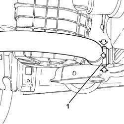
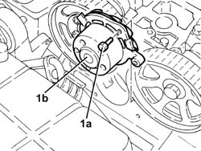
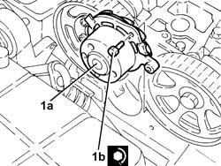
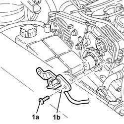
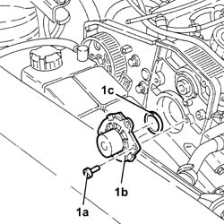
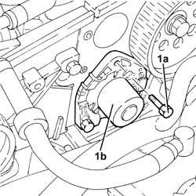
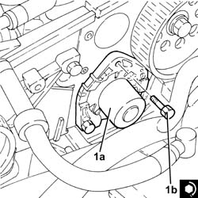
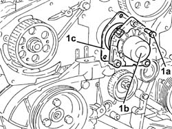
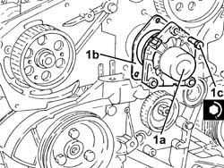

1088C14 water pump - r + r with drive belt removed
- Path
- Procedures > 10 ENGINE > 1088 ENGINE COOLING > 1088C water pump and thermostat > 1088C14 water pump - r + r with drive belt removed
- Kind
- repair procedure (removal / refitting; the operation number is the code)
- Applies to
- engines: 2.0 JTS, 1.9 JTD 8v , 1.9 JTD 16v, 2.0 JTS, 2.4 JTD 10v, 2.4 JTD 20v; all production periods
- Interactive page
- https://sloeber94.github.io/elrnDB-a156/en/#/3237757
Applies to: engines: 2.0 JTS, 2.0 JTS; all production periods
 Removing
Removing
 Refitting
Refitting1. Disconnect the lower coolant outlet hose from the radiator and drain the engine coolant.

Applies to: engines: 2.0 JTS, 2.0 JTS; all production periods
1. Undo the bolts (1a) and remove the water pump (1b) complete with O-ring.

Applies to: engines: 2.0 JTS, 2.0 JTS; all production periods
Refitting
Removing1. Place the water pump (1a), complete with O-Ring, back in its housing and secure it tightening the bolts (1b) to the recommended torque.
 | Fastening | Component | Ø | Value (daNm) |
|---|---|---|---|---|
1b | Bolt | COOLANT PUMP | M8 | (Cylinder head side) 2.3 ÷ 2.8 |

Applies to: engines: 2.0 JTS, 2.0 JTS; all production periods
Connect the rapid attachment for the bottom coolant outlet hose from the radiator.
Refill the engine cooling system with coolant 0010T20 coolant change .
Applies to: engines: 1.9 JTD 8v , 2.4 JTD 10v; all production periods
Removing
Refitting1032B61 timing belt pulley - r r
1. Undo the bolts (1a) and remove the cam angle sensor (1b).

Applies to: engines: 1.9 JTD 8v , 2.4 JTD 10v; all production periods
1. Undo the bolts (1a) and remove the water pump (1b) complete with O-Ring (1c).

Applies to: engines: 1.9 JTD 8v , 2.4 JTD 10v; all production periods
Refitting
RemovingFit the water pump, complete with O-Ring, and fix it tightening the bolts to the recommended torque.
| Fastening | Component | Ø | Value (daNm) |
|---|---|---|---|---|
- | Bolt | COOLANT PUMP | M8 | 2.1 - 2.6 |
Fit the cam angle sensor and fix it using the bolts.
Applies to: engines: 1.9 JTD 16v; all production periods
Removing
RefittingDisconnect the coolant outlet hose from the radiator and drain the cooling system.
1. Undo the bolts (1a) and remove the water pump (1b) complete with gasket.

Applies to: engines: 1.9 JTD 16v; all production periods
Refitting
Removing1. Place the water pump (1a), complete with gasket, back in its housing and secure it tightening the bolts (1b) to the recommended torque.
| Fastening | Component | Ø | Value (daNm) |
|---|---|---|---|---|
1b | Bolt | COOLANT PUMP | M8 | (Cylinder head side) 2.3 ÷ 2.8 |

Applies to: engines: 1.9 JTD 16v; all production periods
Connect the radiator coolant outlet hose.
Refill the engine cooling system with coolant 0010T20 coolant change .
Applies to: engines: 2.4 JTD 20v; all production periods
Removing
RefittingDisconnect the rapid connector and disconnect the lower radiator coolant outlet hose, radiator side.
1. Undo the bolts (1a) and remove the water pump (1b) complete with gasket (1c).

Applies to: engines: 2.4 JTD 20v; all production periods
Refitting
Removing1. Place the water pump (1a) complete with gasket (1b) back in its housing and secure it with the bolts (1c) to the recommended torque.
| Fastening | Component | Ø | Value (daNm) |
|---|---|---|---|---|
1c | Bolt | COOLANT PUMP | M8 | (Cylinder head side) 2.3 ÷ 2.8 |

Applies to: engines: 2.4 JTD 20v; all production periods
Connect the radiator coolant outlet hose.
Refill the engine cooling system with coolant 0010T20 coolant change .